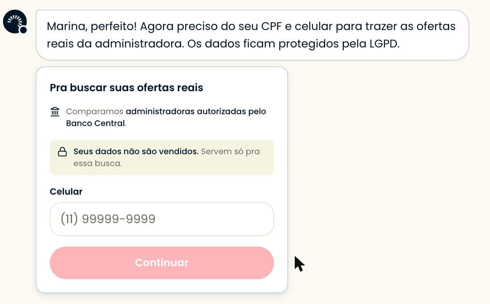
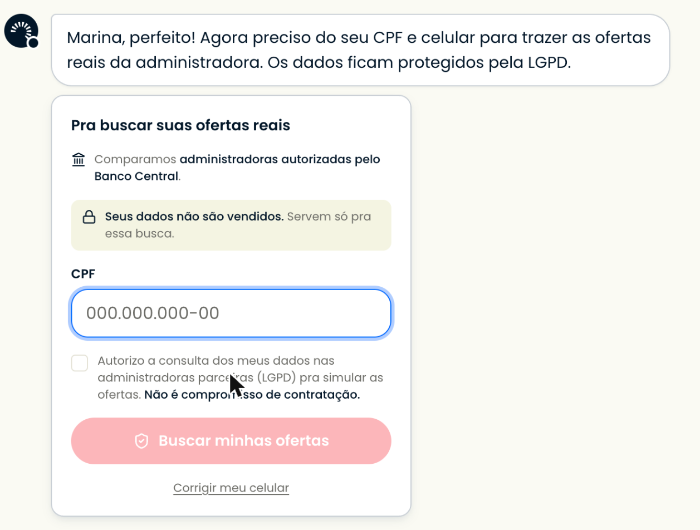
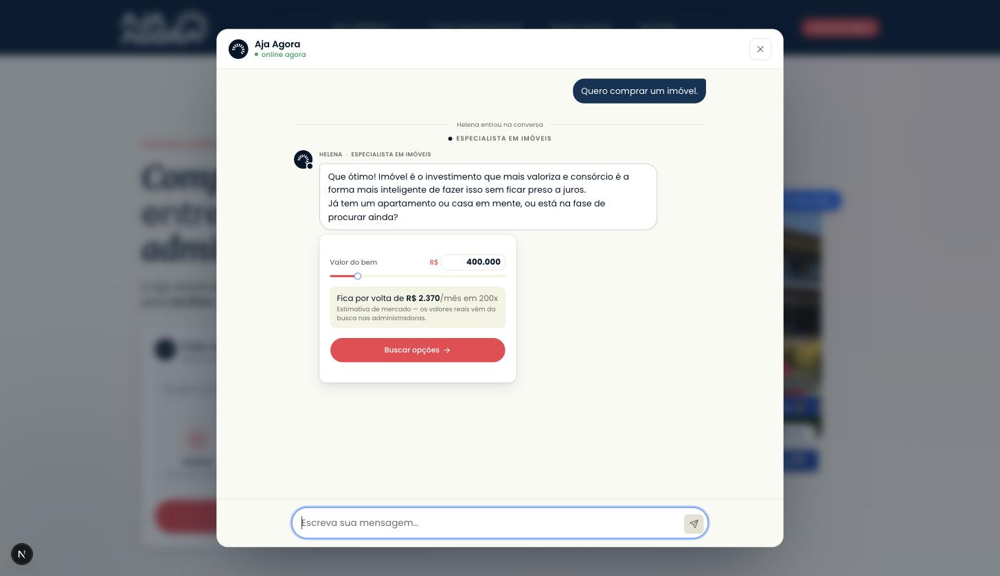
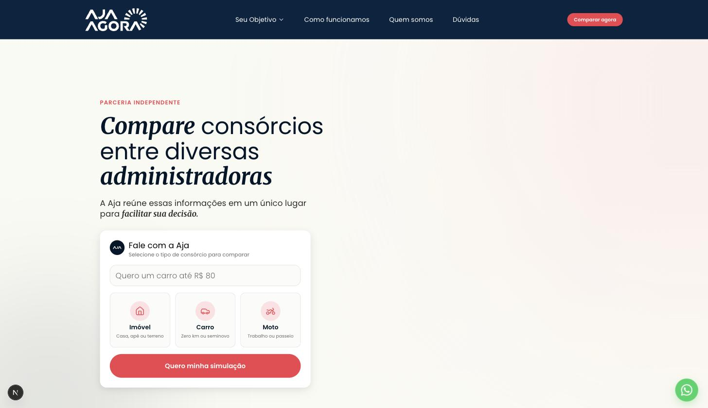

Os 26 itens das abas Site (CRO) e Plano de Ação por Etapa da planilha do Gustavo (28/08), executados de ponta a ponta — e uma medição que mostrou que a auditoria tinha mirado no lugar errado.
A auditoria externa olhou a produção de ~20/08 e apontou 26 ações. Antes de executá-las, medi o funil no banco de produção — e o número que sustentava a lista inteira estava lendo o lugar errado. O trabalho seguiu os 26 itens, mas a ordem de prioridade mudou por causa do dado.
Três coisas passaram a existir:
caixa destacada = nasceu neste trabalho
A planilha diz: "69% das pessoas somem quando o bot pede o CPF", e monta seis itens em cima disso (C1 a C7). Medi o funil real no banco de produção, na janela limpa de 16 a 30/08 — depois do fix de prefetch, então são chegadas de gente:
O CPF não é o pedágio. De quem chega até ele, 86% entrega. Os 69% somem antes — e 34 das 71 conversas (49%) morrem com uma única fala do cliente. Nas 34, o padrão é o mesmo em todas, literal do banco:
A pessoa clicou num chip dizendo exatamente o que queria e recebeu de volta um elogio e uma pergunta. Nenhum número na tela. É o mesmo princípio que o item C1 defende — dar valor antes de pedir dado — aplicado ao ponto onde a perda de fato acontece.
Decisão sua Você aprovou aplicar o princípio ali: quem chega com a categoria escolhida vai direto ao valor, e a agulha passa a mostrar a parcela estimada ao vivo.
| Item | Situação | Prova |
|---|---|---|
| A1 Affordance do campo do agente | FEITO | Moldura, raio e anel de foco iguais aos do form do chat. Dado: das 75 aberturas do teatro, só 4 vieram com semente digitada; o campo levou 12 cliques contra 44 nos blocos abaixo. kv-hero.campo-parece-campo.test.tsx |
| A2 Bolhas decorativas do hero | MEDIDO · vai pro Lucas | 103 cliques em elemento morto no hero, com 14 dos 15 rage_click. Contra 84 cliques em alvo clicável, com 1 rage. A arte promete toque e não entrega — o pedido ao Figma tem evidência. |
| A3 Sticky de chat + furo de medição | FEITO | 87 toques no botão, 58 visitantes, 6 conversas de WhatsApp nascidas — as 6 com origem nula. Carimbo (ref …) + resolução no webhook. 8 testes de integração. |
| A4 Reformular a 1ª dobra mobile | ENCERRADO | Já estava entregue em 20/08. Confirmado no smoke ao vivo — captura na seção 5. |
| A5 CTA unificado sitewide | FEITO | De 4 rótulos para 1 (Comparar agora), com a exceção do submit do hero. Decisão sua. cta-rotulo-unico.test.tsx varre as seções e impede a volta. |
| A6 Feedback visual ao toque | FEITO | Estado active: no átomo (resolve as 8 seções) e nos blocos do hero, respeitando prefers-reduced-motion. 7 casos de teste. |
| A7 Core Web Vitals + UTM/pixel | PARCIAL | Lighthouse real: score 29, LCP 7,7 s, FCP 7,7 s. Diagnóstico invertido — não é a colagem. GTM e GA4 adiados; Pixel intocado. Ver seção 8. |
| A8 Scroll-depth por seção | MEDIDO | Curva na seção 5. Já existia; foi usado. |
| B1 Propagar UTM até "chat iniciado" | AUDITADO | 89,6% das conversas com visita; 35,1% com campanha. As de WhatsApp eram 0% — é o que o A3 fecha. |
| B2 Auditoria de Event Match Quality | FEITO (nosso lado) | _fbp estava em 683 de 46.135 visitas (1,5%) e em 2 dos 22 eventos enviados. Passa a ser completado pelo beacon. Leitura da nota é do Gustavo — seção 7. |
| B3 Evento de otimização "Início de Conversa" | FEITO | Existe no servidor, com dedup contra o pixel por eventID compartilhado. 12 testes de integração. Ativação na conta é do Gustavo — seção 7. |
| B4 Consolidar CBO + ABO | DO GUSTAVO | Operação de conta. Passo a passo na seção 7. |
| B5 Peso orçamentário do remarketing | DO GUSTAVO | Idem, com a ressalva de que depende do B2. |
| C1 Faixa estimada antes do CPF | FEITO | O motor existia desde o FIX-3 e nunca era emitido — zero artefatos de estimativa em toda a base. Agora vive na agulha, com selo. Captura na seção 5. |
| C2 Garantia de privacidade no pedido | FEITO | Linha ancorada na política de privacidade que já existe. 9 casos, incluindo um que proíbe promessa que a operação não cumpre. |
| C3 Desacoplar WhatsApp e CPF | DEPENDE DE ENV | A vitrine (#112) já faz isso e está desligada: VITRINE_CPF/VITRINE_CELULAR não existem em dev nem em prod. Seção 8. |
| C4 CPF como 2º microcompromisso | DEPENDE DE ENV | Mesma dependência do C3. |
| C5 Prova social no pedido | FEITO | A credencial que a landing já assina passou a viajar para dentro do chat. |
| C6 Fricção de digitação do CPF | FEITO + 2 DEFEITOS | Máscaras em fonte única. Escrevendo o teste apareceram dois defeitos reais: fixo saía (11) 33334-444, e colar +55 comia os dois últimos dígitos. |
| C7 Quebrar o pedido duplo em dois passos | FEITO | Celular no passo 1, CPF+LGPD no passo 2. Corrigido em 30/08 após revisão — este dossiê dizia "não feito". Ver seção 8. |
| D1 Instrumentar as 3 sub-etapas do handoff | FEITO | Funil por sub-etapa com p50/p90, no painel de Performance. O dado nunca faltou; faltava alguém olhar. |
| D2 Link direto no lugar de pedir "oi" | ENCERRADO | Já resolvido; e o carimbo do A3 entrou nele — é o salto web→WhatsApp no maior momento de intenção. |
| D3 SLA de resposta humana | FEITO | p50/p90 por estágio + lista de parados, e a campainha: e-mail diário com quem está parado, no worker que já roda em ECS. A medição já achou o problema: p50 de 401 h (16,7 dias) nos 6 handoffs da base. Alarme entregue em 30/08 após revisão — seção 8. |
| D4 Reengajamento automático | VALIDADO | 6 handoffs no período, 1 sem resposta do cliente. Sem volume que justifique construção; a campainha do D3 cobre. |
| D5 CTA de confirmação antes da troca de canal | JÁ EXISTIA | Verificado antes de construir: a cascata já exige aceite explícito e o formulário antes de qualquer handoff. Um terceiro portão somaria atrito. 7 casos registram isso. |
| E1 SLA de documentos pós-proposta | FEITO | Mesmo instrumento e mesma campainha do D3 — a allowlist já inclui proposta_enviada, na_administradora e aguardando_pagamento, que são a fase pós-proposta. A tela declara quando a amostra não sustenta taxa de fechamento: com 2 propostas, qualquer número depois dela é hipótese. |
Placar: 16 feitos com prova · 4 encerrados/validados sem precisar de construção · 4 parciais com o motivo nomeado · 2 do Gustavo.
23 commits, 113 arquivos, +17.125 / −722 linhas. Os números saem de git diff --stat, não de memória — e essa distinção deixou de ser retórica nesta entrega: na primeira versão deste dossiê o item C7 foi dado como não feito enquanto o diff mostrava 208 linhas de card reescrito. A narrativa do que se quis fazer erra; o --stat não.
| Arquivo | Papel |
|---|---|
lib/attribution/codigo-de-origem.ts | O carimbo (ref …) — derivar, carimbar, extrair, remover. |
lib/whatsapp/vinculo-com-o-site.ts | Amarra a conversa de WhatsApp à visita do site. |
lib/conversions/inicio-de-conversa.ts | O chat_iniciado server-side. |
lib/conversions/chave-do-inicio-de-conversa.ts | A chave de dedup, compartilhada por pixel e CAPI. |
lib/admin/handoff-queries.ts | Funil por sub-etapa + lista de parados (D1/D3/E1). |
lib/forms/mascaras.ts | CPF e celular — a cópia que existia em dois arquivos. |
components/admin/performance/funil-de-handoff.tsx | A tela do D1. |
app/api/track/chat-iniciado/route.ts | O beacon do B3. |
drizzle/0048…, 0049… | Enum chat_iniciado + índice de expressão parcial para o carimbo. |
| + 12 arquivos de teste | Todos com o cenário concreto no cabeçalho. |
| Arquivo | O que mudou, e por quê |
|---|---|
lib/agent/qualify-state.ts | A cascata do funil. Categoria dispensa name/desire; o nome desce para colado ao identify; ganha escape e deixa de insistir sobre quem recusa. É a mudança de maior alcance do trabalho. |
lib/agent/langgraph/nodes/capture.ts | O servidor só lê resposta como nome se o card saiu no turno anterior. Fecha a classe do lead que nasceu "Suv". |
lib/agent/langgraph/nodes/emit-card.ts | Marca o fato que autoriza a captura acima. |
lib/agent/langgraph/nodes/persist.ts | O degrau engajado deixa de depender de desireAsked — senão o painel mediria a própria mudança. |
lib/agent/gate-reengage.ts | O watchdog volta a enxergar quem some no gate do nome. |
components/chat/artifacts/value-picker.tsx | A parcela estimada, com selo. Reversão parcial e consciente do FIX-107. |
components/chat/artifacts/gate-identity-form.tsx | Garantia (C2) e autoridade (C5), ancoradas na política de privacidade; dois passos (C7) — celular, depois CPF+LGPD; e nome próprio no mapa de calor para os três botões, que é o que separa o C7 dos outros dois na medição. |
components/kv/ui/kv-cta-button.tsx | Estado active: — um arquivo resolve as 8 seções. |
components/analytics/analytics-scripts.tsx | GTM e GA4 para lazyOnload; Pixel intocado. |
lib/conversions/dispatch.ts | Dois lotes: sinal de interesse não derruba marco de venda. |
lib/observability/langfuse/funil-scores.ts | O score que prova a campanha + a régua de profundidade corrigida. |
proxy.ts | Cookie espelho do código de origem (não-httpOnly, só o prefixo público). |
vitest.setup.ts | sendBeacon vira no-op na suíte — teste unitário não faz rede. |
Capturado no chat de pé, em 31/08, depois da correção do nome. O celular vem sozinho; o CPF só na tela seguinte. A credencial do Banco Central (C5) e a garantia de privacidade (C2) acompanham os dois passos — escondê-las no passo do CPF desfaria os dois itens para caber neste.


Chip "Imóvel" clicado. Antes: elogio e pergunta. Agora:


87% das visitas nunca passam do hero. A queda de 88,8% para 11,5% entre a segunda e a terceira seção é o número que deve priorizar qualquer trabalho futuro de página — e é o argumento a favor de o hero carregar a conversão inteira, como carrega hoje.
O que era: instrumentWriter guardava o trace num WeakMap indexado pelo objeto do writer. Chave por identidade quebra quando alguém põe outro proxy por cima — e route.ts:442 faz isso: collectAgentText(instrumentWriter(rawWriter, trace)). O mapa guardava o proxy de dentro; quem consulta recebe o de fora.
O efeito: três campos do TurnTrace voltaram calados ao estado anterior ao fix que os criou — suppressed sempre vazio, cacheRead e cacheWrite sempre nulos, no canal web. Ninguém foi avisado: não existe teste que falhe quando um número para de ser coletado, e um campo nulo parece um turno sem cache.
Como apareceu: ao instrumentar o índice do turno, meu campo novo também vinha nulo. O log temporário mostrou que o evento CHEGAVA — o que faltava era o trace.
A correção não é registrar o proxy novo, que exigiria todo wrapper futuro lembrar de se registrar. O trace passou a viajar dentro do writer, num símbolo: qualquer proxy que faça Reflect.get passthrough o propaga sozinho.
Cobertura: turn-trace.test.ts — três casos, um deles com três camadas de proxy.
Como apareceu: pilotando o chat no browser para capturar as telas deste dossiê. Não havia teste vermelho, e o smoke por API não pegava — o defeito depende da fala exata que o modelo escolhe.
O modelo entendeu; o servidor não gravou. E como não gravou, a cascata continuou devolvendo o gate do nome, e o card foi pendurado embaixo da própria confirmação — no gate mais frágil do funil, pedindo o dado que a pessoa acabara de dar.
Duas causas, e a segunda é minha. A primeira: o detector de "o agente pediu o nome" exigia seu nome colado, e "seu primeiro nome" tem uma palavra no meio. A segunda: a trava que eu criei nesta branch contra o lead chamado "Suv" aceitava uma única autorização — a do card. Quando quem pergunta é o modelo (e o card cede a vez de propósito), não havia autorização nenhuma.
A correção não é mais um padrão na lista. O detector passou a aceitar até duas palavras entre o possessivo e "nome" — a forma da pergunta, não uma instância dela; acrescentar /seu primeiro nome/ resolveria hoje e falharia em "seu nome completo". E a captura passou a aceitar a segunda âncora (o modelo pediu o nome no turno anterior), que é o mesmo tipo de fato do servidor. O lead "Suv" continua impossível, com caso próprio.
Cobertura: detect-name-turn.test.ts (14 casos, incluindo os que devem continuar negativos) e cenario-o-nome-que-o-modelo-pediu.test.ts (4 casos no grafo — um deles prova o caminho em que o card é suprimido, que é o único que exige a segunda âncora).
O que era: o sinal novo do primeiro turno (item do bloco C) contava as falas do cliente por state.messages. Numa conversa real de três falas, saiu 0 → 1 → 3.
A causa: run-turn.ts monta essa lista por dois caminhos — do banco no primeiro turno, do checkpointer nos seguintes —, e a fala corrente entra em momentos diferentes em cada um.
Por que importa mesmo o score estando certo: o score só olha o zero, e o zero acontecia uma vez só. Mas o campo tem nome de contagem e vai para o painel; o primeiro que ler "turno 3" numa conversa de 3 falas vai depurar a conversa, não o contador. É a mesma família de defeito que esta entrega vem perseguindo — o número que o servidor publica tem de ser verdade.
Cobertura: cenario-o-indice-do-turno-e-exato.test.ts, no grafo de verdade.
O que era: o tsconfig.json gerado pelo Next inclui .next/dev/types, que o Turbopack reescreve continuamente. Com o dev server de pé, pnpm typecheck reportava 82 erros de sintaxe em código que ninguém escreveu — e as linhas mudavam a cada execução.
Por que não é cosmético: no meio desses 82 estava um erro de verdade — um campo novo que faltava numa guarda de exaustividade Record<keyof FunnelState, true>. Só apareceu ao desligar o container e rodar de novo. Typecheck que só é confiável com a aplicação desligada é typecheck que ninguém roda.
Correção: tsconfig.typecheck.json, que não checa .next/. Nada se perde: a validação de rota já vinha corrompida em dev, e o next build valida por conta própria.
O que era: ao mover o gate do nome para o meio do funil, ele caiu numa regra escrita quando ele só existia no primeiro contato — decideShowGate só liberava gate neutro quando não havia dado de qualificação. Com o valor informado, nextGate devolvia name para sempre e o card nunca aparecia. Funil parado, agente conversando educadamente, venda congelada.
Como apareceu: no smoke ao vivo, no browser. Typecheck e 3.700 testes estavam verdes.
Cobertura: cenario-primeira-resposta-tem-numero.test.ts
O que era: o servidor lia qualquer resposta curta como nome enquanto o gate name estivesse ativo. Isso era seguro quando ele só existia no primeiro contato — na posição nova, o cliente está respondendo ao modelo.
Correção: não é mais uma palavra na lista. A lista já guardava "Uma", "Sujo" e "Voltei" — os três leads reais que nasceram assim — e não cobre "SUV", "Sedã", "Prata". A parede é um fato do servidor: o card do nome saiu no turno anterior?. E vale um turno, não a conversa inteira — na primeira versão era monotônico, e bastava o cliente perguntar a taxa de administração para "Curto" virar o nome dele no turno seguinte.
Cobertura: cenario-nome-nao-e-a-resposta-do-modelo.test.ts, 6 casos.
O que era: o gate foi para o meio do funil sem as três proteções que gate do meio do funil tem. Não estava em STUCK_ESCAPE_GATES (quem responde "prefiro não dizer" travava para sempre), estava em NON_REENGAGE_GATES (o watchdog não via quem sumia nele) e não tinha entrega no WhatsApp. Tudo isso na população em que 86% entrega o CPF.
Correção: escape que desiste da pergunta em vez de inventar nome; watchdog e guard de turno-mudo voltam a enxergá-lo; texto próprio no WhatsApp; e recusa não devolve o card.
Cobertura: qualify-state.o-nome-nao-e-porta-fechada.test.ts, 12 casos.
O que era: dispatch.ts manda tudo à Meta numa chamada e marca failed no lote inteiro. Com o chat_iniciado — evento personalizado, o de maior chance de recusa, e 3× mais frequente que os marcos de venda — uma recusa dele levaria junto o Purchase de uma venda de seis dígitos. Com o erro apontando o campo errado, ninguém iria procurá-la.
Correção: dois lotes, divididos por natureza. Fila só de venda continua sendo uma chamada.
Cobertura: dispatch.sinal-nao-derruba-venda.test.ts
O que era: pnpm test:unit saía com exit 1 e 3.718 testes verdes na tela — dez Unhandled Rejection. O sendBeacon do happy-dom não é no-op: abre requisição HTTP de verdade, e com o servidor de dev de pé um teste de componente gravava chat_iniciado no banco local.
Meu erro de verificação: eu filtrava a saída por Tests e Test Files, e a linha Errors ficava fora do grep. Passei a usar o exit code.
Três defeitos de medição que a mudança do funil criaria em silêncio, todos corrigidos:
desireAsked, e a categoria agora dispensa o desire para 90% das entradas — o kanban mostraria uma queda que é instrumentação;name: 1, então quem informasse o valor e chegasse ao nome registraria profundidade 1;percentDaAnterior assumia escada, mas o funil pula estágio — exibiria ">100% da anterior".O evento de início de conversa nascia na criação da conversa, e o vínculo de origem acontecia depois. Como o evento é idempotente pela chave, ele saía sem fbc, sem fbp e sem visita — justamente para o tráfego que o A3 recupera. O %Conv Chat consertava; o sinal que ensina a campanha, não.
Três itens dependem do Gerenciador de Anúncios e da conta. O nosso lado está pronto e testado; abaixo está o passo a passo do que falta, na ordem.
META_CAPI_TEST_EVENT_CODE ao secret tb/prod/aja-agora/env (temporário).ChatIniciado — uma "Navegador", outra "Servidor" — fundidas na mesma linha. Se aparecerem separadas, a deduplicação não pegou: avise, é o eventID.ChatIniciado. Nome sugerido: "Conversa iniciada — Aja".value, de propósito.Lead, InitiateCheckout e Purchase hoje, antes do deploy._fbp deve mover: ele estava em 1,5% das visitas e em 2 dos 22 eventos enviados.Não há código envolvido. O que registro aqui, para o antes/depois existir:
VITRINE_CPF e VITRINE_CELULAR não existem em tb/dev/aja-agora/env nem em tb/prod/aja-agora/env — conferido hoje. Com elas, o cliente vê cartas reais antes de entregar documento. Precisa de um par CPF+celular de conta homologada na Bevi.Lighthouse mobile contra produção: score 29, LCP 7,7 s, FCP 7,7 s, TBT 2.890 ms, TTI 14,3 s. FCP e LCP iguais dizem que nada pinta até 7,7 s.
O diagnóstico do plano estava invertido: a colagem do hero era o suspeito nomeado e é 12% do peso. Adiei GTM e GA4 (285 KB e ~1.020 ms fora do caminho crítico) sem tocar no Pixel. O resto — 584 KB de JS próprio, 314 KB de fonte — é bloco de performance com orçamento e medição antes/depois, não cabia numa campanha de conversão.
E isso casa com o Connect Rate de 94%: 6 de cada 100 cliques pagos não viram sessão. Em 2.473 cliques/mês são ~149 pessoas pagas que esperam oito segundos de tela branca e voltam.
Medi duas vezes, mesmo comando e mesma URL: score 29/LCP 7,7 s e score 28/LCP 8,0 s. Variância de ~4% — o diagnóstico é estável, não foi acaso.
Correção de registro. A versão deste documento que chegou pelo WhatsApp em 30/08 afirmava, em dois lugares, que o C7 não tinha sido feito. Estava errado. O card de identidade foi partido em dois passos no commit 15407e32 — celular primeiro, CPF e aceite LGPD depois —, e o erro entrou no mesmo commit que fez a mudança: a mensagem do commit não mencionou, e o texto antigo daqui não foi atualizado junto. Apontado na revisão crítica da entrega.
O que existe hoje: passo 1 pede só o celular; passo 2 traz CPF e aceite, com botão de voltar para corrigir o número. Quem chega pelo WhatsApp começa no passo 2, porque lá o celular já é conhecido. O card do histórico continua mostrando tudo de uma vez e inerte. O invariante não mudou — o envio segue exigindo os três, e a Bevi recebe o mesmo payload.
A consequência que importa para a leitura da campanha. Três mudanças entraram no mesmo card, na mesma janela: a garantia de privacidade (C2), a credencial do Banco Central (C5) e os dois passos (C7). O critério que o PRD declara para o bloco C é a taxa do gate identify — e essa taxa passou a medir as três de uma vez. Se subir, não se sabe qual delas; se cair, não se sabe o que reverter. O próprio PRD adverte contra isso na entrada do C7 ("três experimentos disputando o mesmo card não produzem leitura"), e a advertência não foi respeitada.
O que foi feito para reduzir o dano (30/08, depois da revisão): os três botões do card ganharam nome próprio no mapa de calor — identify-passo-1-ok, identify-envio e identify-voltar-ao-passo-1. Com eles, a taxa do identify deixa de ser um número só e vira três, na mesma tabela page_events:
Isso separa o C7 dos outros dois. C2 e C5 continuam sem separação entre si — são texto no card, não deixam rastro de interação —, e essa parte não tem conserto retroativo: para distingui-las seria preciso um A/B que não foi montado. Fica registrado como limite conhecido da medição desta janela, não como número que alguém possa reivindicar depois.
Com o instrumento novo apontado para os dados reais:
Metade de um mês é a mediana, não a cauda. E a tabela de notificação está vazia porque o caminho mudou — o atendente atende pelo painel, não pelo WhatsApp —, então o incidente de 14/08 (42 min para entregar, 17h24 para ler) não é sequer o pior caso: hoje não há notificação nenhuma sendo registrada.
O que entreguei na primeira rodada: a lista de parados, com nome e telefone, no painel de Performance. O que faltava: o alarme. E a falta era grave pelo motivo exato do item — uma tela que alguém precisa abrir, para um incidente cuja causa é ninguém ter aberto a tela.
Entregue em 30/08, depois da revisão. Um e-mail diário com quem está parado, disparado pelo worker BullMQ que já roda em ECS (aja-agora-worker-prod) — o quinto ciclo dele, com job repetível próprio de 24 h.
Não é o Monitor do Langfuse que o plano nomeia, e a diferença não é de conveniência: Monitor observa trace, e handoff parado é ausência de trace. O lead esquecido há 16 dias não gera evento nenhum — é justamente por isso que ninguém o viu. Alarme que dispara com evento não pega silêncio.
Três decisões que valem registro, porque são o que separa um alarme vivo de um alarme desligado na primeira semana:
if de relógio. O job repetível é persistido no Redis, então vale entre reinícios e entre instâncias. E o handler ramifica por nome do job: sem isso, ou o alarme rodaria no período de 30 s do funil (~2.880 e-mails por dia), ou o funil inteiro passaria a rodar uma vez por dia — silenciosamente, matando venda. Os dois modos de falha têm teste.Os balões da colagem prometem toque e não entregam, em 103 cliques. O pedido ao Figma tem número: ou os balões viram alvo de verdade, ou a arte deixa de sugerir que são clicáveis.
As saídas com erro ficam no arquivo de propósito (evidência editada não é evidência), e as três estão refeitas em docs/medicoes/2026-08-30-consultas-refeitas.txt, com a causa de cada uma:
identify como artefato buscava algo que não existe — card de gate não é persistido, só os de dado. Refeita sobre conversations.metadata, que é onde o estado do funil vive;text antes do LIKE;1. O primeiro turno. Abra a home, clique no chip Imóvel.
Esperado: a resposta traz o card do valor com "Fica por volta de R$ 2.370/mês em 200x" e o selo de estimativa. Não deve haver "como posso te chamar?" nesse turno.
2. O campo do hero. Olhe o card "Fale com a Aja".
Esperado: o campo tem borda visível e o cursor vira barra de texto ao passar por cima.
3. O CTA. Role a página inteira.
Esperado: todo botão diz "Comparar agora", exceto o de dentro do card do hero, que diz "Quero minha simulação".
4. O toque. No celular, pressione e segure qualquer botão vermelho.
Esperado: ele escurece e encolhe levemente enquanto pressionado.
5. O painel. Abra /admin/performance.
Esperado: abaixo do funil de mídia, um bloco "Depois do handoff" com sete etapas, tempo mediano e p90, e a lista de parados.